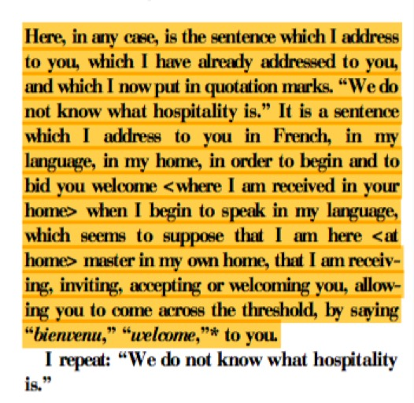
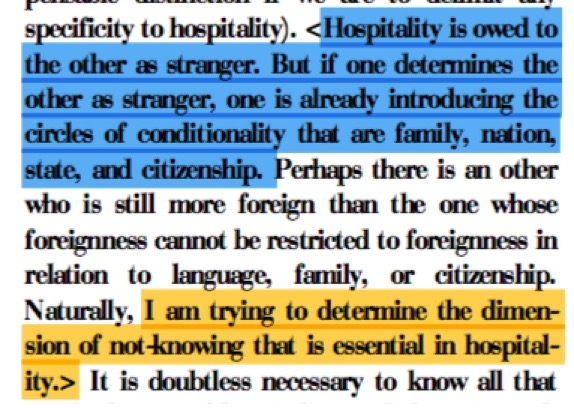

“Who is invisible enough to see you?”
an ethics for making dying illegal – a recipe, for survival or how to I’d rather not to die
a schizosomatic proposition from afar:
with a concern for the always disappearing sock
To dress a huge bombom
The size of a room’s architecture
To preach biting and scratching
To move one’s legs until they snap
To eat a piece of light
With a mouthful of shadow slices
To poke four eyes
To lick someone else’s head’s hair
To bite a cheek without biting
To slap the air. Softly
To gasp. Once
To put two paper cones. One for each ear. Inside each ear
To slide one’s forehead on a slippery glass
To open the mouth in a circle. Three times
To think not aloud: wah weh pah muh meh
To pull a sleeve until the hand is hidden
To draw a line with a finger from belly
button to left shoulder
To draw a line with two fingers from
Belly button to belly button. Going around the waist
To put a ball of paper inside the mouth. Trying not to wet it
Then spit it
To thread a braid with your hair
And then pull from it
Four times
To pinch your skin while shutting your eyes very strongly
To open and close your eyelids as fast as you can for 30 seconds
To touch one of your teeth
With one of your fingers
One jump with the sound of ha
To pull your own sweater until your whole body is completely lost inside it
Repeat at least once a month with all the necessary variations
"“Like Deleuze. I believe in the world and want to be in it. I want to be in it all the way to the end of it because I believe in another world in the world and I want to be in that. And I plan to stay a believer, like Curtis May eld. But that’s beyond me, and even beyond me and Stefano, and out into the world, the other thing, the other world, the joyful noise of the scattered, scatted eschaton, the undercommon refusal of the academy of misery.”
yesss, hospitality !!!
advvv [2:50 PM]
“Critics have the issue backwards: the greater the departure from the norm, the more a concept of neurodiversity is required. […] We need to make room for difference, even, or especially, when that difference seems incapable of producing prized forms of competence. We need to be *hospitable*, however tired or frustrated caregivers and service providers might be (or focused on the bottom line politicians might be). There are myriad ways to be present, connected, and alive; myriad ways to have relationships. In sum, one certainly can adopt a neurodiverse perspective on significant impairment. Indeed, one must.”
from medieval Latin hospitare ‘entertain’, from hospes, hospit- (see host1) .
and if you are a G in entertaining
you are a Ghost !!!!!!
ft [2:59 PM]
:cloudycatspooky:
huhuhuh
“This foregrounding of the immediate field of experience we call entertainment. Entertainment is prior to the distinction between active and passive, sub- ject and object.
Entertainment is captivation in a dance of attention.”

